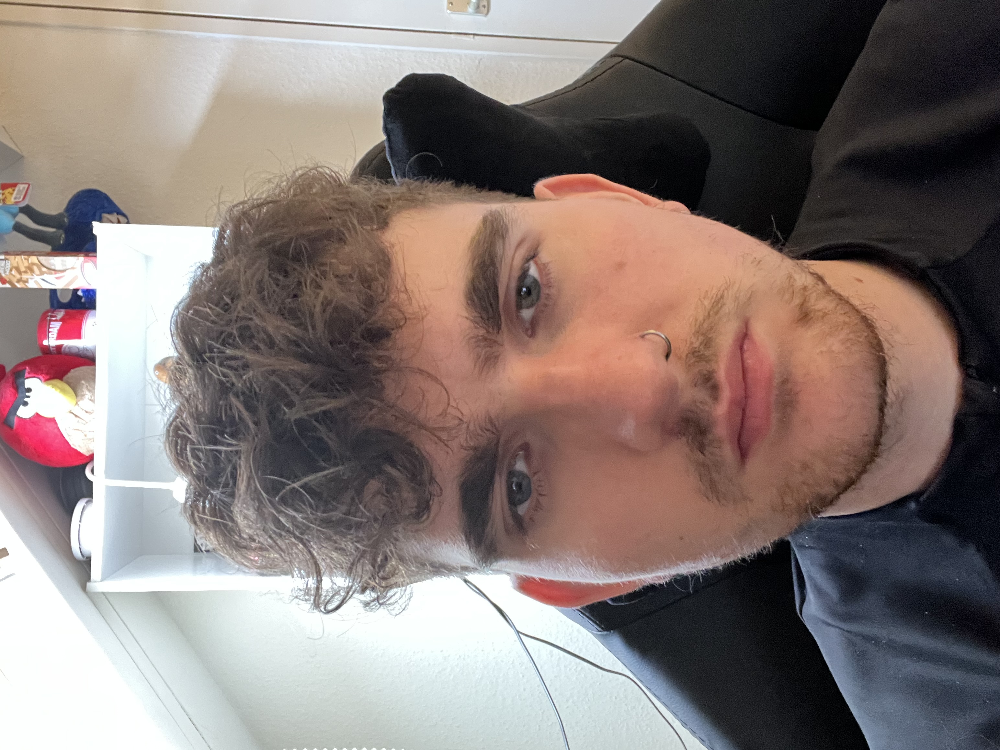

my Resume Tony Jansen
Document

Date of birth: 26-04-1999
birthplace: Venlo, The Netherlands
Nationality: Dutch
About me
I am a relaxed, independent and hard working person. I like working alone but i have
alot of experience working together in pairs or groups. i can speak 3 languages: dutch, english and a bit of german.
Education
2003-2011: Basisschool de koperwiek Venlo.
2011-2015: College den hulster Venlo, Kader diploma achieved on 05-07-2015.
2015-2018: Citaverde College Horst, Animal care. Level 3 diploma achieved on 25-06-2018.
2018-2020: Citaverde College Horst, manager animal care. Level 4 diploma achieved on 22-06-2020.
2020-2021: Has Venlo, Applied biology HBO, Diploma not achieved.
2022: Aeres MBO Barneveld, Animal technician course. level 3 diploma achieved.
Work experience
2014: intern at HF electronics, as electrician.
2014: Intern at Elmec, as electrician.
2015-2019: Employee at Albert Heijn, as a cleaer/ quality control.
2015: intern at faunaland, as animal caretaker.
2016: intern at beesteboel venlo, as animal caretaker.
2017 and 2018: intern at cattery barnhoornsfarm, as animal caretaker.
2018: intern at dogcentre holland, as animal caretaker.
2019: intern at citaverde college Horst, as supervisor of animal care students.
2019-2020: Employee at garden center Leurs Venlo, as animal salesman.
2021-2023: Employee at Envigo/inotiv, as animal technician.
Skills
Always enthusiastic about learning new things. skillfull with computers, costumers and animals.
awards,certifications
2015: Kader diploma.
2018: Animal care level 3 diploma achieved.
2020: Animal care level 4 diploma achieved.
2022: Animal technician level 3 course diploma achieved.
Contact and Hobbies
contact
Hobbies
capstone project 2